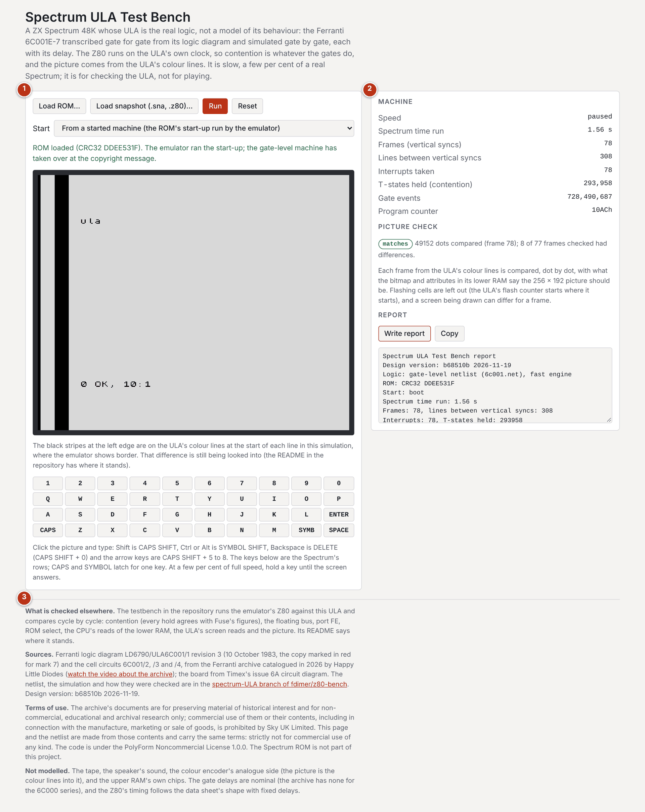
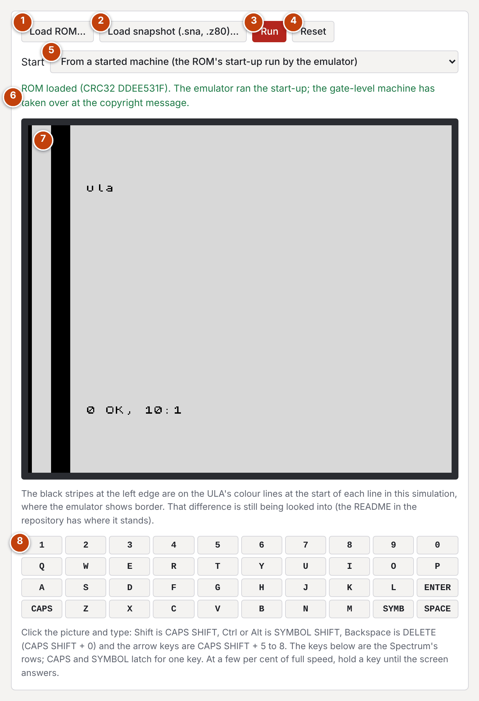
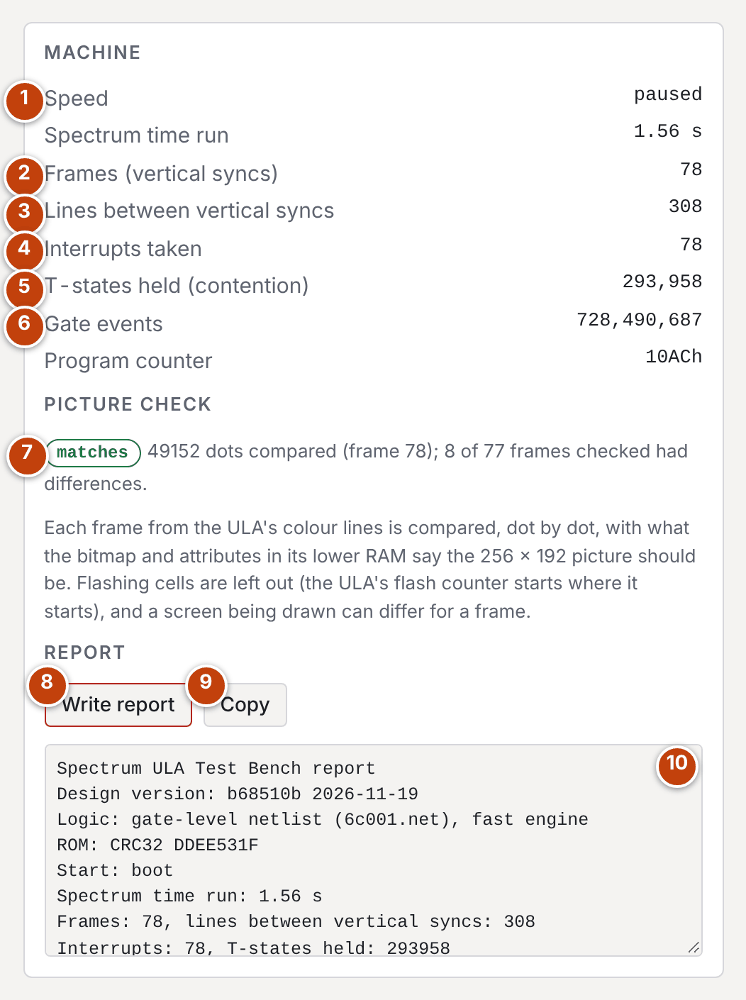

> LIST
Spectrum ULA Test Bench documentation
How to use the test bench, and how the ULA inside it is put together. The numbers in each list match the numbered markers on the screenshot above it.
User guide
The test bench is a ZX Spectrum 48K in which nothing of the ULA is modelled: a Z80 core runs the real ROM, and every bus cycle goes onto the pins of the Ferranti 6C001E-7's logic, as transcribed from Ferranti's own drawing. When the Z80 is held, what it reads from the lower RAM, when it is interrupted and every dot of the picture come back from those pins. Every gate is simulated with its own delay, so the machine runs at only a few per cent of a real Spectrum's speed. It is made for checking the ULA. For simply using a Spectrum, the ZX Spectrum emulator runs at full speed and has the debugging tools.
Quick start
- Press Load ROM… and choose your own 16 KB Spectrum 48K ROM image. The ROM is Sinclair's and is not included. Your browser keeps it, so you only load it once.
- The machine starts at once, at the copyright message: the ROM's start-up is run by the emulator and handed over to the gate-level machine, because at this speed the ROM's own memory test would take many minutes.
- Click the picture and type. Hold each key until it appears on the screen, about a second, and leave a few seconds before pressing the same key again.
- To run a program, press Load snapshot… and choose a
.snaor.z80file. - If the machine does anything a real Spectrum would not, press Write report and send the report with a description of what you saw.
The page

- The machine: the ROM and snapshot buttons, the start choice, the TV picture and the keyboard.
- The instruments: the meters, the picture check and the report.
- What is checked elsewhere, sources, terms of use and what is not modelled, with the design version the page was built from.
The machine and the keyboard

- Load ROM…: takes a 16,384-byte Spectrum 48K ROM image; a file of any other size is refused. The message shows its CRC32. The ROM is saved in your browser and loaded again the next time you open the page.
- Load snapshot (.sna, .z80)…: reads the snapshot with the ZX Spectrum emulator's own loader, then hands its memory and registers to the gate-level machine. Load the ROM first.
- Run / Pause: runs the machine as fast as the browser can simulate it. Paused, the meters and the picture show where it stopped.
- Reset: starts the machine again, from the start chosen beside Start; a loaded snapshot is dropped.
- Start: From a started machine lets the emulator run 2.5 seconds of the ROM's start-up and hands over its memory and registers, so the gate-level machine begins at the copyright message. From power-on starts the gate-level machine itself from reset, memory test and all, which takes a few seconds of Spectrum time and so many minutes here. Changing it restarts the machine.
- Message: what the page has just done, or why it refused a file.
- Picture: 352 × 288 dots of the frame made from the ULA's colour lines (GREEN', RED', BLUE' and the bright line N.HL), with 48 dots or lines of border round the 256 × 192 picture. Because a frame takes the best part of a minute to finish, the frame being drawn is laid over the last whole one, so you can see it build. The black stripes at the left are explained under What is still open. Click the picture to give it the keyboard.
- Keyboard: the 40 keys in the Spectrum's four rows. On screen, CAPS and SYMB (SYMBOL SHIFT) latch for the next key, and a key stays down for 0.4 s after you let go, so the ROM sees it. On your own keyboard, letters, digits, space and Enter are the Spectrum keys, Shift is CAPS SHIFT, Ctrl or Alt is SYMBOL SHIFT, Backspace is DELETE (CAPS SHIFT + 0) and the arrow keys are CAPS SHIFT + 5 to 8. The ROM reads the keyboard once a frame, and ignores a key pressed again within five frames of its release, so at this speed hold each key for about a second and wait a few seconds before repeating one.
The meters and the picture check

- Speed: how fast the machine is running, as a share of a real Spectrum, or paused. Under it, Spectrum time run: the time the machine has run since it started, in Spectrum seconds.
- Frames: the vertical syncs seen on the ULA's sync line.
- Lines between vertical syncs: the line syncs counted from the end of one vertical sync to the start of the next. A frame is 312 lines, of which the vertical sync takes 4, so this reads 308.
- Interrupts taken: the interrupts the Z80 took from the ULA's INT pin, one a frame while interrupts are enabled.
- T-states held: the T-states the Z80 waited because the ULA stopped its clock while it read the screen (contention).
- Gate events: how many times a gate or cell output has been worked out since the start. Under it, the Program counter: where the Z80 is in the ROM or the program.
- Picture check: each finished frame is compared, dot by dot, with what the bitmap and attributes in the lower RAM say the 256 × 192 picture should be. Cells with the flash bit are left out, since the ULA's flash counter starts wherever it starts. Green matches means every dot agrees; red gives the number of dots that differ. A frame during which the screen changed (typing, scrolling, CLS) can differ, because the RAM is read after the frame ends; the line beside it counts how many frames had differences. It says no picture when there is no frame yet.
- Write report: writes a summary of the run into the box (see Reporting what you find).
- Copy: copies the report. If your browser does not allow it, the report is selected so you can copy it yourself.
- Report: the text to paste into an issue or an email.
Reporting what you find
The report gives what is needed to repeat the run: the design version the page was built from, the logic that ran, the ROM's CRC32, how the machine started (and the snapshot's name), the Spectrum time run, the frame, line, interrupt and held T-state counts, the program counter, the picture check's results and your browser. Add what a real Spectrum does differently.
Issues and reports go to the spectrum-ULA branch of fdimer/z80-bench.
Hardware reference
What is being tested
The Spectrum's ULA is a Ferranti uncommitted logic array: a sea of identical bipolar gates connected by a final metal layer to make Sinclair's design. In a Spectrum it makes the clocks, reads the screen from the lower 16K of RAM (the 4116 chips) and turns it into the TV picture, stops the Z80's clock when both want that RAM (contention), makes the interrupt, selects the ROM, and is port FE: the keyboard, the border, the speaker and the tape. The chip modelled here is the 6C001E-7 (mark 7) of issue 3 and later Spectrum 48K boards, from Ferranti's drawing LD6790/ULA6C001/1 revision 3 of 10 October 1983, in the copy marked "MK7" in red pen.
The drawing was transcribed into a netlist of 385 cells (gates, flip-flops, counters, latches, pin cells, and the oscillator, tape and colour-encoder cells), one line each with its square on the drawing's grid, so every entry can be checked against the original. The scan was traced by program and then checked by hand, gate by gate wherever the simulation disagreed. The repository's README lists the hand corrections, among them one place where the netlist departs from the drawing on purpose: the A2 row address is taken from the next counter stage, because the drawing's line would put half the screen reads at the wrong address.
The closed loop
In an ordinary emulator the ULA is code that behaves like the chip. Here the ULA is only logic, and the rest of the Spectrum is wired to its pins as on Timex's issue 6A circuit diagram:
- The Z80 makes its bus cycles edge by edge of the clock the ULA puts out (pin 32, inverted by transistor TR3), with the data sheet's shape and fixed delays. When the ULA holds the clock, the Z80 simply waits.
- I/O requests: transistor TR6, an emitter follower from the Z80's A0, holds the ULA's IORQ input high while A0 is high, so the ULA sees I/O requests for even ports only.
- The lower RAM (4000h–7FFFh) is read and written only through the ULA's RAS, CAS and DRAM WE pins and its address pins: the row is taken as RAS falls, the column as CAS falls, the data appears 100 ns later, and a write happens while WE and CAS are both low. After CAS rises the data lines keep the last byte for 150 ns; that is the floating bus.
- The data lines reach the ULA through the board's 470 Ω resistors, and A0–A6 through 330 Ω: when the ULA drives its own address onto the RAM, its drive wins.
- The ROM answers while the ULA's ROM CS is low. The upper 32K of RAM is on the Z80's side and is not modelled chip by chip.
- The keyboard joins the half-row whose address line is low to KB0–KB4, read by the ULA during a port FE read.
- The interrupt is the ULA's INT pin, which the Z80 looks at on the last clock rise of each instruction.
- The picture is the colour lines that go into the ULA's colour encoder, read every dot, with N.SYNC for the syncs.
The simulation and its delays
The netlist is simulated event by event: when an input of a gate changes, its output is worked out and changes after the gate's delay. Several outputs joined on one net form a wired OR, as on the chip, and the pin cells resolve against the board (an open-collector pull-down wins; otherwise the chip's drive beats the board's). The page uses a compiled engine with the same rules as the repository's reference simulator and the same results.
The archive has no gate delays for the 6C000 series, so nominal values are used: 1.4 ns a NOR, 1.7 ns an inverter, 5 ns a flip-flop and 4 ns an input or output buffer. With these the RAS and CAS lines have no glitches. The inverter is slightly slower than the NOR for one reason: where the contention window ends on the same oscillator edge that would start the CPU clock's next half, the clock gate sees a pulse one gate wide, and if it passes, it runs round the clock-stop latch for ever.
Lines, frames and the picture
- Clocks: a 14 MHz oscillator; the dot clock is half that, and the Z80's 3.5 MHz clock a quarter, when it is not held.
- Lines and frames: 448 dots (224 T-states) a line, 312 lines a frame, 19.968 ms. The interrupt is low for 32 T-states once a frame.
- Screen reads: for every 8 dots of picture the ULA makes two RAS cycles of two CAS each (bitmap, attribute, bitmap, attribute for two cells), as on Ferranti's hand-drawn timing sheet.
- Contention: a memory cycle to 4000h–7FFFh that starts during the picture is held 6, 5, 4, 3, 2, 1, 0 or 0 T-states, from T-state 14,335 of the frame.
- Where the picture sits: in the bench's frame, counted from the end of each line sync and each vertical sync, the 256 × 192 picture starts at dot 85 of line 60.
How far it is checked
- Against the emulator and Fuse: the repository's testbench runs a test program on the ZX Spectrum emulator and replays every bus cycle on the gate-level ULA. Every clock hold agrees with the emulator, which agrees with Fuse's figures, for memory and for I/O (even ports, odd ports and a contended high byte). Every read of an odd port returns what Fuse returns (the floating bus). Port FE, ROM select, every CPU read of the lower RAM and every screen read agree, and the colour lines match the emulator's picture in every dot of the 256 × 192 area.
- Closed loop: with the ULA in charge, the ROM runs, keys typed on the bench reach BASIC, a BASIC program typed in runs, and the picture check gives every dot right on a still screen.
- Not yet: no real hardware. Nothing has been compared with a working 6C001E-7's signals. That is what this bench is for.
What is still open
- The left edge of the border: at the start of each line, after the line sync, the colour lines carry 8 dots of black, then the border colour and black in turn for 16 dots each, twice, and the border from dot 72. The emulator shows border over the whole 48 dots left of the picture. Whether the real chip does the same, or a gate is still wrong in the transcription, is not known.
- Where INT falls: with the clock holds lined up with Fuse's, INT falls 2.44 T-states before T-state 0 of the frame. An instruction starting at T-state −1 to 30 then takes the interrupt, one T-state earlier than Fuse's 0 to 31: relative to the interrupt, this ULA holds the CPU one T-state later, like the "late timing" 48Ks some real machines are. It could also be the nominal delays or the exact edge the Z80 samples INT on; a measurement on a real chip would settle it.
What is not modelled
- The tape and the speaker: nothing reads EAR from a tape, and the speaker is not played.
- The colour encoder's analogue side: the picture is the logic lines that go into it, not the composite signal.
- The upper RAM and the ROM chips: they are on the Z80's side and are plain memory.
- The analogue side of the pins: levels and loading are not simulated; each pin is a logic value.
- Real gate delays: the delays are nominal, and the Z80's timing follows the data sheet's shape with fixed delays.
Sources and terms of use
Ferranti logic diagram LD6790/ULA6C001/1 revision 3 (10 October 1983, the copy marked in red for mark 7, checked against the unmarked copy), the cell drawings 6C001/2, /3 and /4, and the hand-drawn "Typical System Timing", from the Ferranti archive catalogued in 2026 by Happy Little Diodes (watch the video about the archive); and Timex's issue 6A circuit diagram for the board. The netlist, the simulator and how they were checked are in the spectrum-ULA branch of fdimer/z80-bench.
The archive's documents are for preserving material of historical interest and for non-commercial, educational and archival research only. Commercial use of them or their contents, including in connection with the manufacture, marketing or sale of goods, is prohibited by Sky UK Limited. The netlist, the test bench and this documentation are made from those contents and carry the same terms: strictly not for commercial use of any kind. The code is under the PolyForm Noncommercial License 1.0.0. The Spectrum ROM is not part of this project.